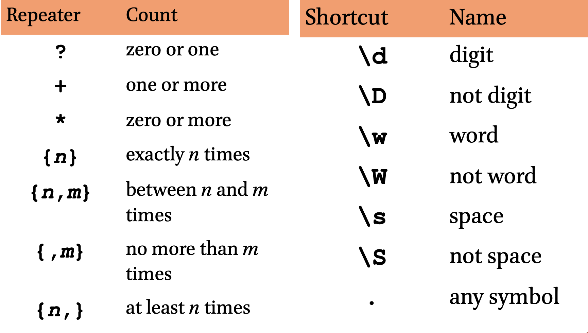

5 Lesson 05
5.1 Constructing Robust Searches
5.2 regular expressions
In this lesson we will learn about regular expressions, an important semi-language for constructing complex searches. Any text editor that supports regular expressions will work fine for this lesson, but let’s all use Sublime Text (both Mac and Windows).
Let’s use the following practicum files (Right Click > Save File as ...) for the in-class practice: 1) version for training; 2) version with answers.
Open the practicum file in Sublime Text.
5.2.1 What are regular expressions?**
- very small language for describing textual patterns
- not a programming language, yet a part of each one
- incredibly powerful tool for find/replace operations
- old (1950s-60s)
- “arcane art”
- ubiquitous

Source: https://xkcd.com/208/
5.2.2 What would we use regular Expressions for?
to search:
- all spelling variations of the same word:
- Österreich, Osterreich or Oesterreich..
- words of specific morphological patterns:
- [search], [search]er, [search]ed, [search]ing, [search]es: all derivatives from the same root/word
- entities that may be referred to differently:
- references to Vienna in different languages? (Wien, Vienna, Вена, فيينا, etc.)
- references to Austria? (Vienna, Graz, Linz, Salzburg, Innsbruck, etc.)
- references to concepts:
- references to education in biographies: “s/he graduated from”, “s/he studied”, etc.
to search and replace:
- reformat “dirty”/inconsistent data (OCR output, for example)
to tag:
- make texts navigable and more readable
- tag information relevant to your research
and many other uses…
5.2.3 The Basics
A regular expression (can be shortened as regex or regexp) is a sequence of symbols and characters expressing a string or pattern to be searched for within a longer piece of text. In this sequence there are characters that match themselves (most characters) and there are characters that activate special functionality (special characters). For example:
Viennais a regular expression that matches “Vienna”;- “
Vienna” is a pattern;
Question: if the pattern at matches strings with “a” followed by “t”, which of the following strings will it match?2
| at | hat | that | atlas | aft | Athens |
5.2.4 Characters & Special Characters
- most characters match themselves.
- matching is case sensitive.
- special characters:
()^${}[]\|.+?*. - to match a special character in your text, you need to “escape it”, i.e. precede it with “” in your pattern:
–
Osterreich [sic]**does not* match “Osterreich [sic]”. –Osterreich \[sic\]matches “Osterreich [sic]”.
5.2.5 Character Classes: []
- characters within
[]are choices for a single-character match; think of this as a type of either or. - the order within
[]is unimportant.x[01]matches “x0” and “x1”.[10][23]matches “02”, “03”, “12” and “13”.
- initial
^negates the class: –[^45]matches any character except 4 or 5.
Question: if the pattern [ch]at matches strings with “c” or “h” followed by “a”, and then by “t”, which of the following strings will this regular expression match?3:
| that | at | chat | cat | fat | phat |
5.2.6 Ranges (within classes)
- Ranges define sets of characters within a class.
–
[1-9]matches any number in the range from 1 to 9 (i.e., any non-zero digit) –[a-zA-Z]matches any letter of the English alphabet (ranges for specific languages will vary) –[12][0-9]matches numbers between 10 and 29 (i.e., the first digit is either 1 or 2; the second one—any digit)
Ranges shortcuts
| Shortcut | Name | Equivalent Class |
|---|---|---|
\d |
digit | [0-9] |
\D |
not digit | [^0-9] |
\w |
word | [a-zA-Z0-9_] (actually more) |
\W |
not word | [^a-zA-Z0-9_] (actually more) |
\s |
space | [\t\n\r\f\v ] |
\S |
not space | [^\t\n\r\f\v ] |
. |
everything | [^\n] (depends on mode) |
Question: if the pattern /\d\d\d[- ]\d\d\d\d/ matches strings with a group of three digits, followed by a space or a dash, and then—by another group of four digits, which of the following strings will this regular expression match?4:
| 501-1234 | 234 1252 | 652.2648 | 713-342-7452 | PE6-5000 | 653-6464x256 |
5.2.7 Repeaters
- these special characters indicate that the preceding element of the pattern can be repeated in a particular manner:
runs?matches “runs” or “run”1\d*matches any number beginning with “1”
| repeater | count |
|---|---|
? |
zero or one |
+ |
one or more |
* |
zero or more |
{n} |
exactly n times |
{n,m} |
between n and m times |
{,m} |
no more than m times |
{n,} |
no less than n times |
Question: We have several patterns, which strings will they match?5
| Patterns | |||||
|---|---|---|---|---|---|
A) ar?t |
B) ar*t |
C) a[fr]?t |
D) ar+t |
E) a.*t |
F) a.+t |
| Strings | |||
|---|---|---|---|
| 1) “at” | 2) “art” | 3) “arrrrt” | 4) “aft” |
5.2.8 Lab: Intro (in the practicum file).

5.2.9 Anchoring
- anchors match between characters.
- anchors are used to assert that the characters you’re matching must appear in a certain place.
- for example,
\bat\bmatches “at work” but not “batch”.
| Anchor | matches… |
|---|---|
^ |
the beginning of a line or a string |
$ |
the end of a line of a string |
\b |
word boundary |
\B |
not word boundary |
5.2.10 Alternation: “|” (pipe)
- in
regex, “|” means “or”- on the US keyboard layout, this character is in the vicinity of “Enter” and “Right Shift”.
- you can put a full expression to the left of the pipe and another full expression to the right, so that either one could match:
seek|seeks|soughtmatches “seek”, “seeks”, or “sought”.seeks?|soughtmatches “seek”, “seeks”, or “sought”.
5.2.11 Grouping
- everything within
( … )is grouped into a single element for the purposes of repetition or alternation:- the expression
(la)+matches “la”, “lala”, “lalalala” (but not “all”). schema(ta)?matches “schema” and “schemata” but not “schematic”.
- the expression
- grouping example: what regular expression would match “eat”, “eats”, “ate” and “eaten”?
eat(s|en)?|ate- NB: we can make it more precise by adding word boundary anchors to exclude what we do not need, like, for example, words “sate” and “eating”:
\b(eat(s|en)?|ate)\b.
5.2.12 Lab: Part I (in the practicum file).

5.2.13 Replacement
regular expressionsare most often used for search/replace operations- in text editors:
- Search Window: search pattern
- Replace Window: replacement pattern
5.2.14 Capture
- during searches,
( … )groups capture patterns for use in replacement. - special variables
\1,\2,\3, etc. contain the capture (in some text editors:$1,$2,$3). - if we apply
(\d\d\d)-(\d\d\d\d)to “123-4567”: –\1(or,$1) captures “123” –\2(or,$2) captures “4567”
5.2.15 Capture & Reformat
- How to convert “Schwarzenegger, Arnold” to “Arnold Schwarzenegger”?
- Search:
(\w+), (\w+) - Replace (a):
\2 \1 - Replace (b):
$2 $1
- Search:
- NB: (!) Before hitting “Replace”, make sure that your match does not catch what you do NOT want to change
5.2.16 Lab: Part II (in the practicum file).
5.2.17 To keep in mind
regular expressionsare “greedy,” i.e. they tend to catch more than you may need. Always test!- test before applying! (In text editors Ctrl+Z (Win), Cmd+Z (Mac) can help to revert changes)
- check the language/application-specific documentation: some common shortcuts are not universal (for example, some languages/applications use
\1to refer to groups, while others use$1for the same purpose).
5.3 Class materials
- Presentation with all the slides:
- PDF (Windows PowerPoint Format)
5.4 Digital materials
- Online references:
- Interactive tutorial: http://regexone.com/
- Cheat Sheets:
5.5 Reference Materials
- Goyvaerts, J. and Levithan, S. (2012). Regular Expressions Cookbook. Second edition. Beijing: O’Reilly. Amazon Link.
- Friedl, J. E. F. (2006). Mastering Regular Expressions. 3rd ed. Sebastapol, CA: O’Reilly. Amazon Link
(I will share PDFs of these books via Slack; I strongly recommend to flip through the first book just to get an idea of what kind of things one can do with regular expressions.)
5.6 Homework
- Finish the practicum; push your answers to your github repository.
Python
- Work through Chapters 6 and 7 of Zelle’s book; read chapters carefully; work through the chapter summaries and exercises; complete the following programming exercises: 1-8 in Chapter 6; 1-9 in Chapter 7;
- Watch Dr. Vierthaler’s videos:
- Episode 09: Dictionaries
- Episode 10: Putting it Together (Analyses)
- Episode 11: Errors (reading and handling)
- Note: the sequences are somewhat different in Zelle’s textbook and Vierthaler’s videos. I would recommend you to always check Vierthaler’s videos and also check videos which cover topics that you read about in Zelle’s book.
Submitting homework:
- Homework assignment must be submitted by the beginning of the next class;
- Now, that you know how to use GitHub, you will be submitting your homework pushing it to github:
- Create a relevant subfoler in your
HW070172repository and place your HW files there; push them to your GitHub account;- Email me the link to your repository with a short message (Something like: I have completed homework for Lesson 3, which is uploaded to my repository … in subfolder
L03) - In the subject of your email, please, add the following:
CCXXXXX-LXX-HW-YourLastName-YourMatriculationNumber, whereCCXXXXXis the numeric code of the course;LXXis the lesson for which the homework is being submitted;YourLastNameis your last name, andYourMatriculationNumberis your matriculation number.
- Email me the link to your repository with a short message (Something like: I have completed homework for Lesson 3, which is uploaded to my repository … in subfolder
- Create a relevant subfoler in your
Matches are highlighted: at, hat, that, atlas, aft, Athens.↩
Matches are highlighted: that, at, chat, cat, fat, phat.↩
Matches are highlighted: 501-1234, 234 1252, 652.2648, 713-342-7452, PE6-5000, 653-6464x256.↩
ar?tmatches “at” and “art” but not “arrrt”;a[fr]?tmatches “at”, “art”, and “aft”;ar*tmatches “at”, “art”, and “arrrrt”;ar+tmatches “art” and “arrrt” but not “at”;a.*tmatches anything with an ‘a’ eventually followed by a ‘t’.↩Solution: Simply connect all toponyms from the list with a pipe symbol “|”↩
Solution 1:
\b([\w ]+) \(Lower Austria\)— for Lower Austria;\b([\w ]+) \(Salzburg\)— for Salzburg; Solution 2 (cooler):\b([\w ]+)(?=( \(Lower Austria\)))— for Lower Austria;\b([\w ]+)(?=( \(Salzburg\)))— for Salzburg.↩